| 日付 | 2025年4月29日（火） - 2025年5月2日（金） | ||||||||
|---|---|---|---|---|---|---|---|---|---|
| 山域 | 九州の山 | ||||||||
| メンバー | 単独 | ||||||||
| 山行形態 | 3泊4日避難小屋泊、キャンプ | ||||||||
| アクセス | 電車、飛行機、バス | ||||||||
| ルート (Map1) |
|
2日目
5時に小屋を出発。まだ暗くてヘッドライトなしでは歩けない。
それでも小屋を出たのは自分が一番最後だった。
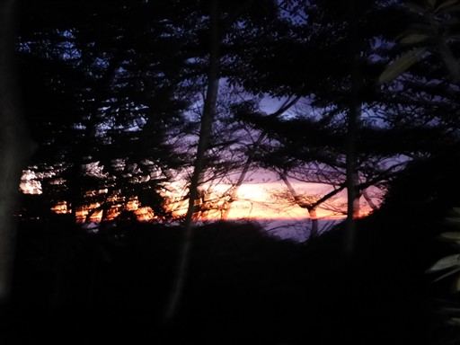
昨日歩いた道を引き返し花之江河に到着。
ようやくヘッドライトがなくても歩ける程度に明るくなってきた。
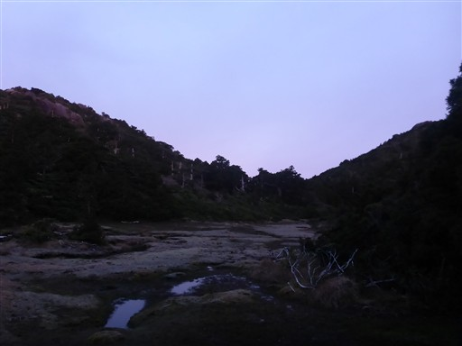
山の斜面が赤く輝きだす。日の出を迎えたようだ。
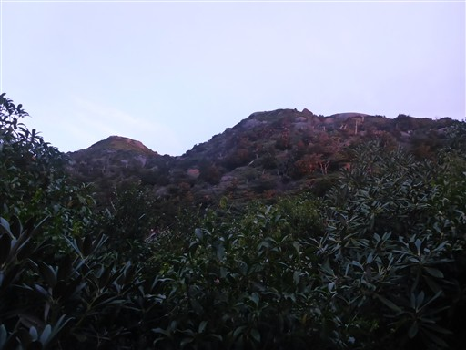
ここから黒味岳を往復するため分岐点にザックをデポする。
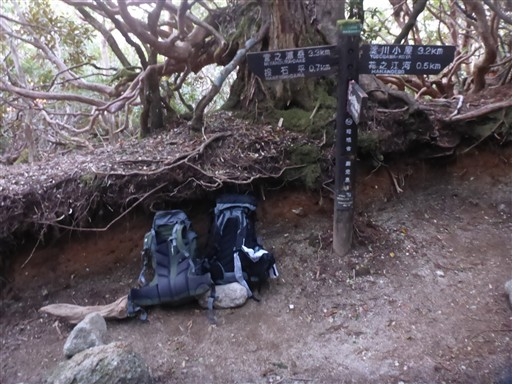
山の中腹で日の出直後の太陽を拝む。
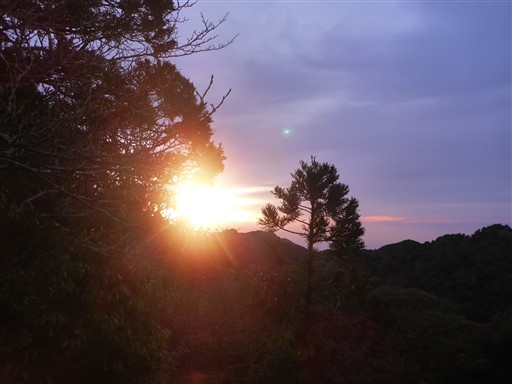
黒味岳への道は少々険しい。といってもロープも足場もあり、難易度は高くない。
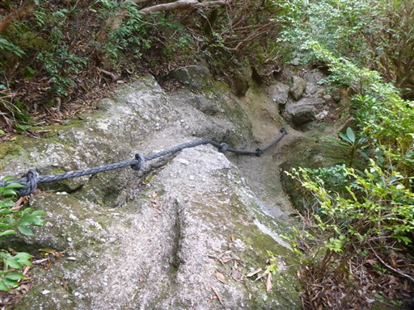
しばらく登ると山頂の岩峰が見えてくる。
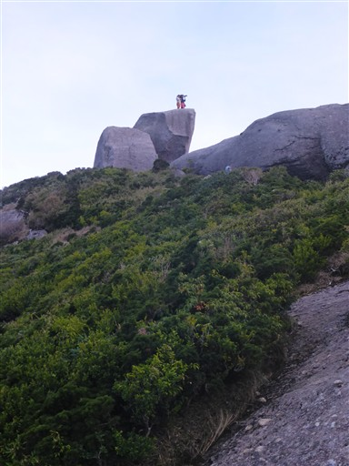
黒味岳山頂に到着。標高1831m。

山頂標識よりもあちらの岩峰の方が標高が高そうだ。
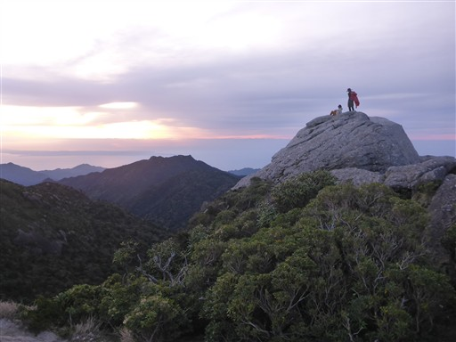
岩峰である山頂は360度の大展望台。
真ん中のピークが目的地の宮之浦岳だ。
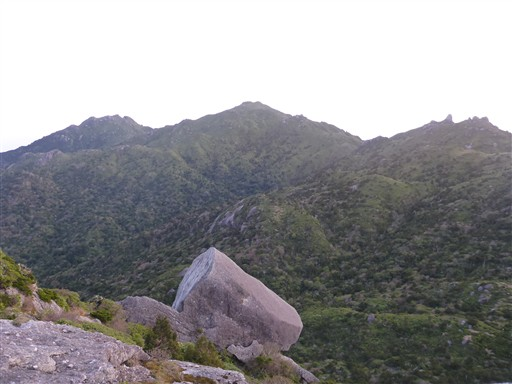
太陽は残念ながら雲の中に隠れてしまったが、これだけの展望があれば十分だ。
本日は曇り予報だったが、雲の量は多くなく比較的良い天気なのはうれしい誤算。
海を隔てて種子島が見えている。
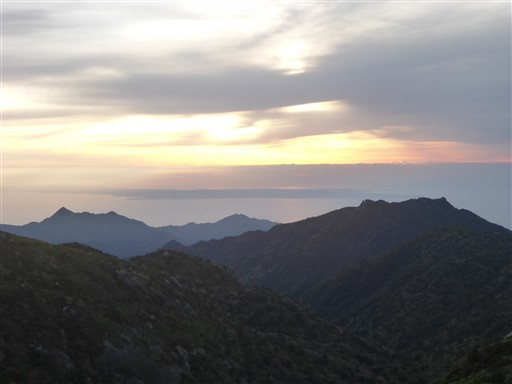
黒味岳を下山しザックを回収したら宮之浦岳を目指す。
山道でヤクザルを発見。結構人慣れしている。
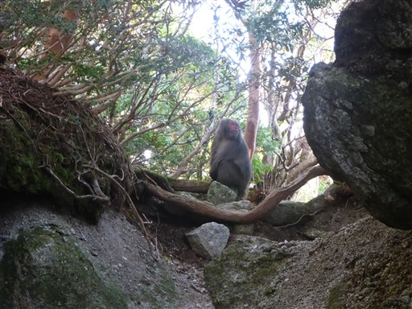
岩場もよく整備されていて非常に歩きやすい。
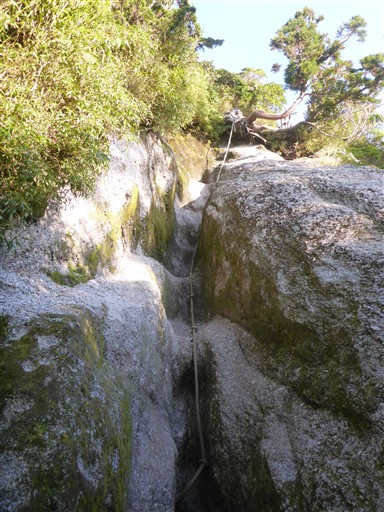
投石平に到着。
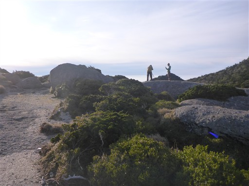
目の前に見えるのは投石岳。
この辺りは全てのピークを巻いていくように登山道が付けられている。
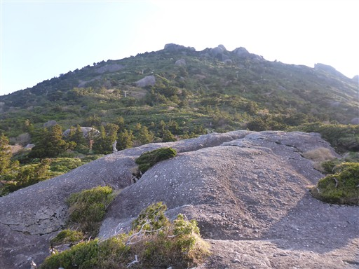
シャクナゲ。まだ蕾だ。花が咲くのは5月下旬。
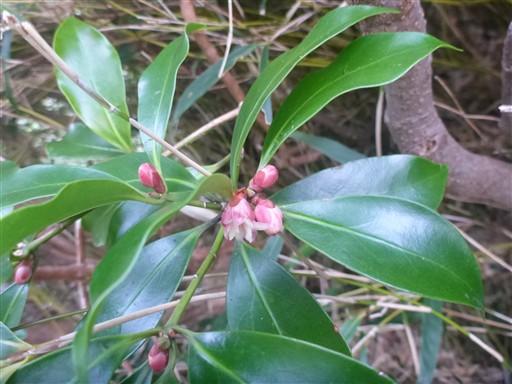
この辺りは標高が高く、高い木はあまり生えていない。
中腹以下の巨木の森とは雰囲気が異なり、笹原が広がっている。
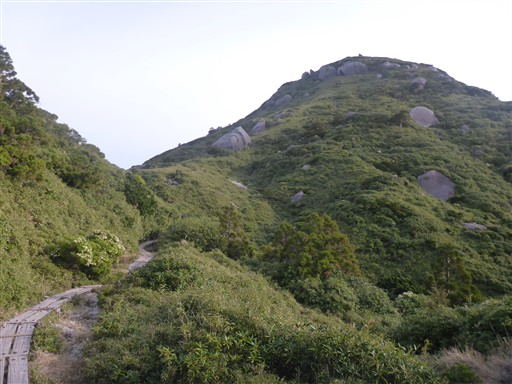
そして笹原の中に巨岩が点在している。
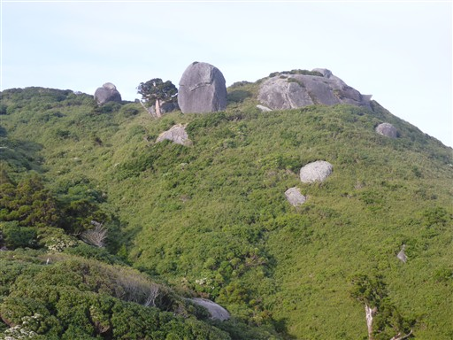
栗生岳。山頂標識はあるが、岩の上に通じる道はない。
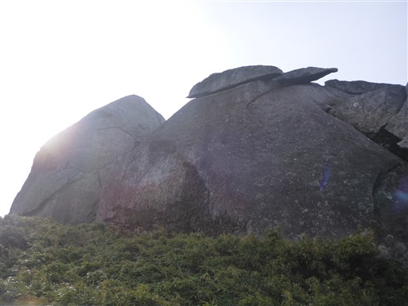
もう宮之浦岳は目と鼻の先だ。
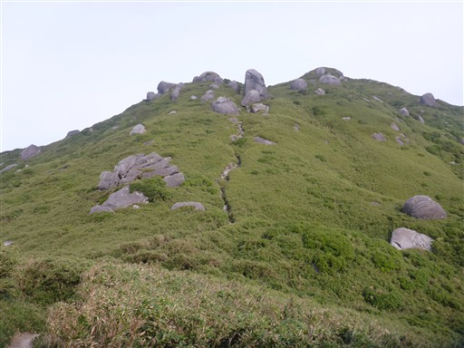
振り返ると歩いてきた道が見える。左の特徴的な形の山は翁岳だ。
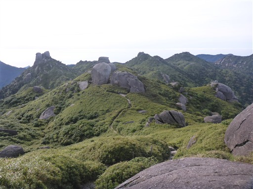
宮之浦岳山頂に到着する。標高1936m。
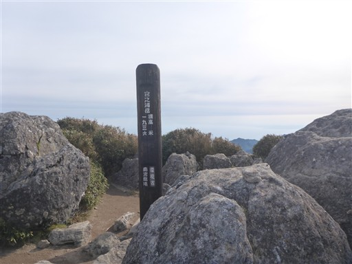
山頂には大きな三角点がある。一等三角点だ。
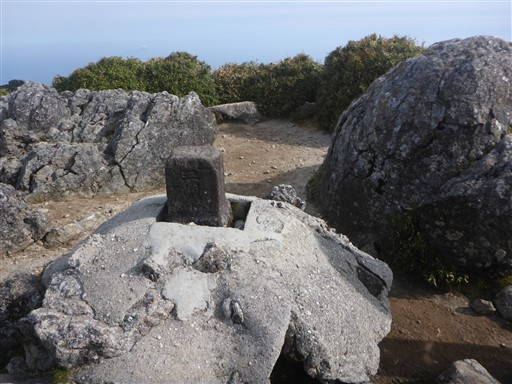
山頂はまさに360度の大展望台。目の前にそびえるのは永田岳。
奥の方に口永良部島が見えている。
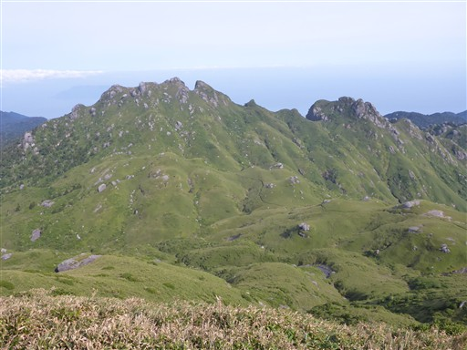
東側の展望。右奥の尖ったピークは愛子岳。空港近くから登れる山だ。
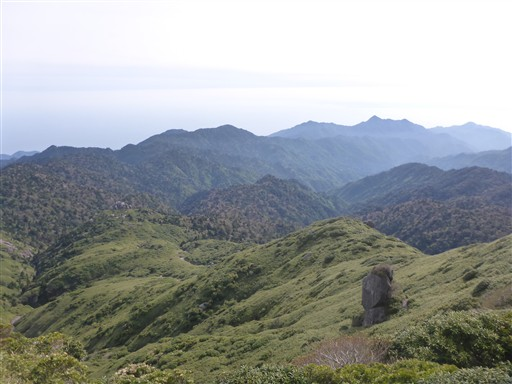
真ん中右の山頂部に岩がある緑の山が黒味岳。
そこからここまで歩いてきた。
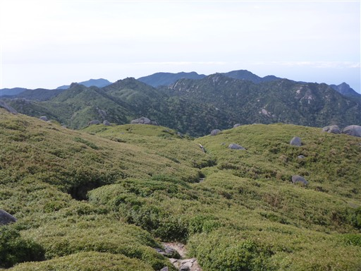
こちらは噴煙を上げる硫黄島。
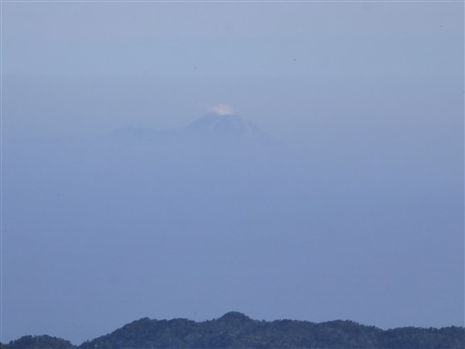
山頂はしばらく無人だったが、その後に続々と登山者がやってきて賑わっている。
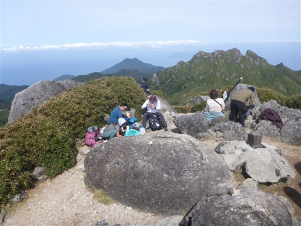
1時間ほどの滞在で山頂を出発する。
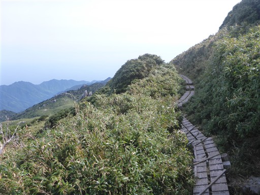
再び分岐点にザックをデポし、永田岳を往復する。
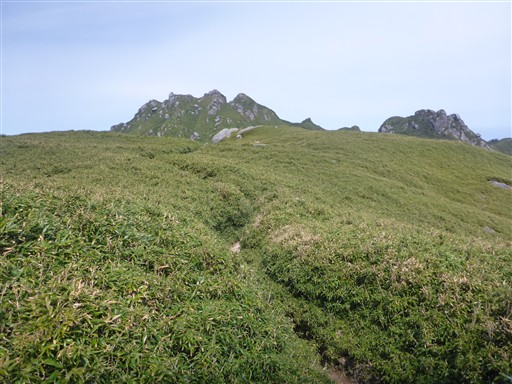
道は整備されているが、少々藪がうるさい所がある。
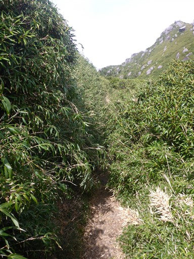
最低鞍部の水場から見上げる永田岳。
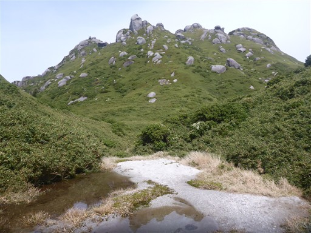
巨岩が点在する斜面を登っていく。
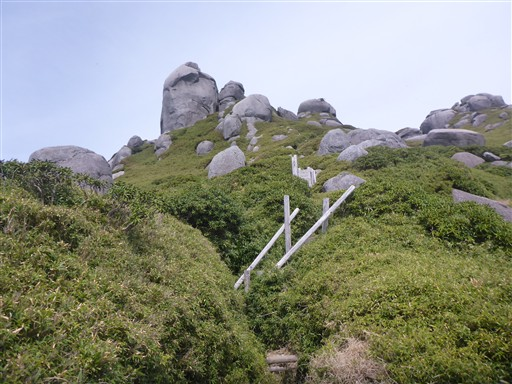
山頂直下は傾斜の緩い岩場だ。
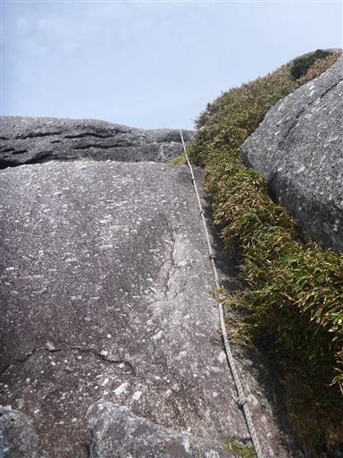
永田岳山頂に到着。標高1886m。
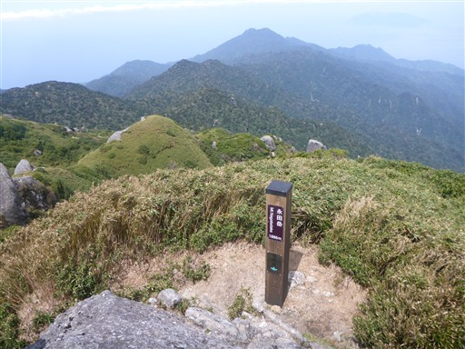
宮之浦岳のすぐ隣のピークではあるが、広がる展望は異なる。
まず、こちらからは宮之浦岳を眺めることができる。
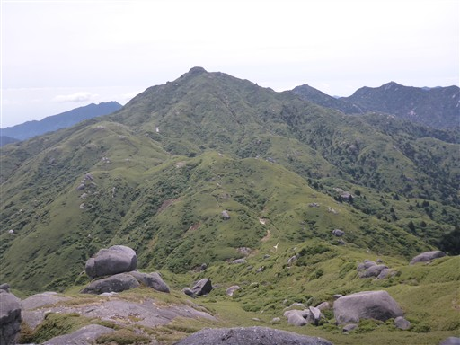
口永良部島の全体像もよく見える。
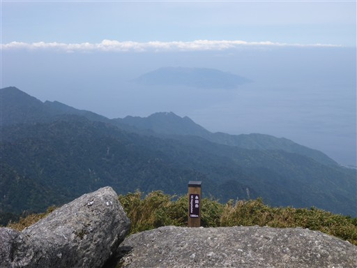
そして、海岸線と集落が見える。
屋久島中心部の山々の中で、永田岳が唯一、海岸線が見える山だ。
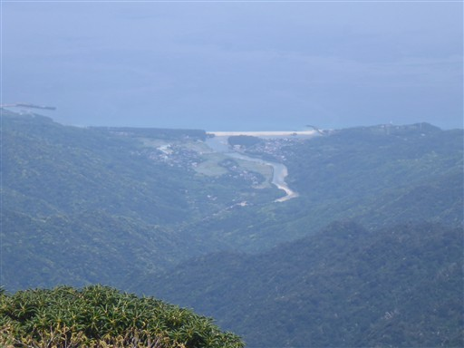
険しい岩壁。こちらの方はかなり急峻な地形になっている。
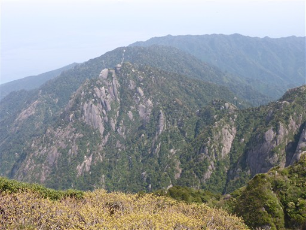
元来た道を引き返し、下山道に入っていく。
山の斜面になんと雪渓が残っている。
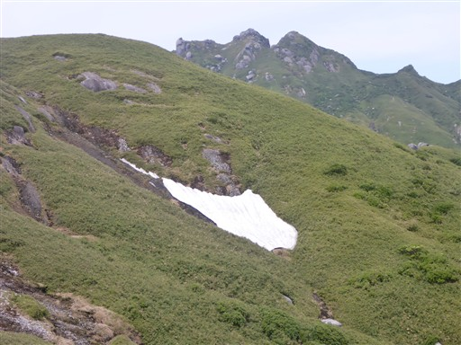
笹原広がる美しい登山道が続く。
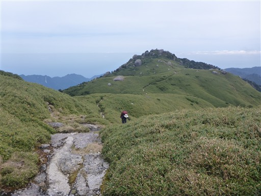
平石岩屋に到着。岩の上に登ってみる。
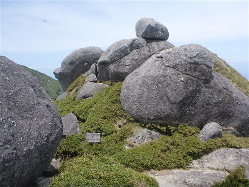
岩の上からは素晴らしい展望が広がる。
笹原の中に、宮之浦岳に続く登山道が見える。左のピークは翁岳だ。
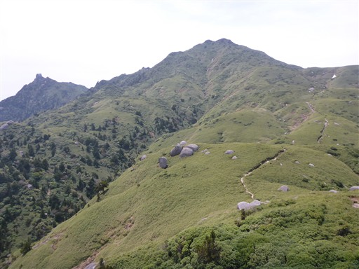
笹原がなくなり、植生はシャクナゲが中心になる。
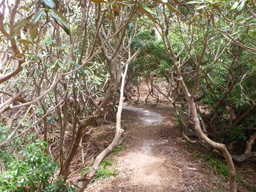
この辺りも地形は急峻だ。
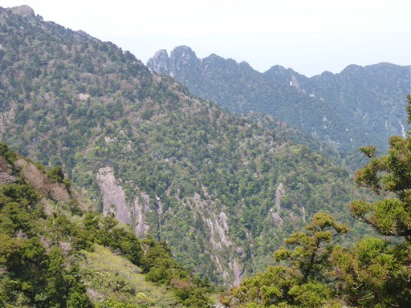
杉とあわせてヒメシャラの木をよく見かける。
ヒメシャラにしてはかなりの大木だ。
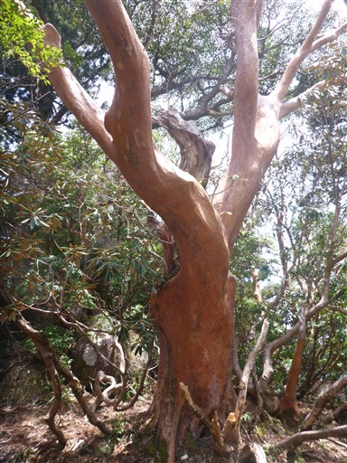
スミレを発見。アセビ以外はほとんど花を見かけなかったが、わずかに咲いている花がある。
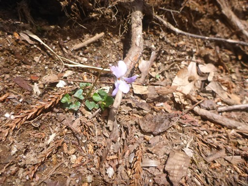
第一展望台に到着。この辺りで宮之浦岳は見納めだ。

巨木の森に入って行く。もうあまり展望は広がらない。
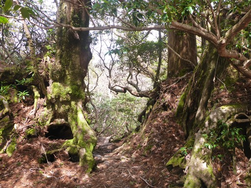
登山道のど真ん中で子ザルが毛づくろいをしている。いくら何でも警戒心が無さすぎだ。
側を通り過ぎるとこちらの様子を伺っていたが、逃げることはなかった。
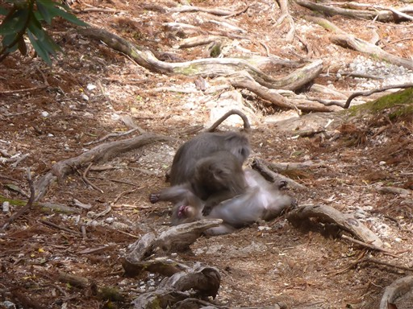
新高塚小屋に到着。まだ13時なので、高塚小屋まで行くことにする。
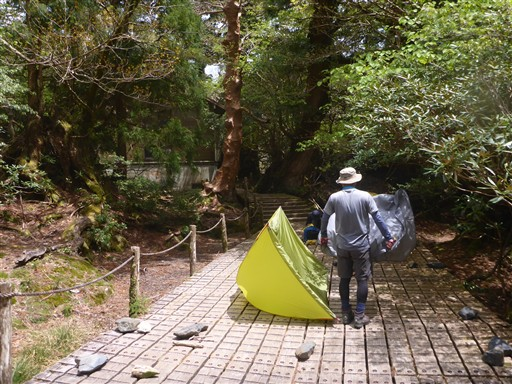
高塚小屋には水場がないので、ここで水を汲んでおく。
水量は少ないが、水を汲みやすいようにホースがあるのがありがたい。
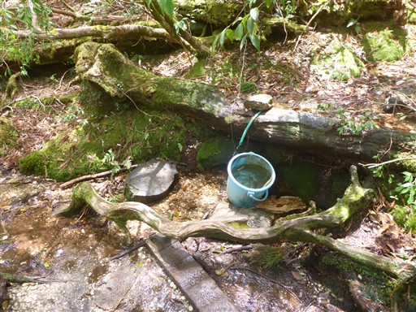
周囲は名もなき巨木が立ち並ぶ森だ。
杉の幹の中に別の木の根がめり込んでいるのだが、中はどうなっているのだろう？

この辺りは木道がしっかりと整備されている。
高塚小屋に到着。思ったよりも小さな小屋だ。
周囲はヒメシャラの木が多い。新緑がきれいだ。
まだ時間が早いため、小屋の近くにある縄文杉を見に行く。
屋久島で一番大きな木であり、一番有名な木だ。
人との比較図。これを見れば大きさを実感できるが、
展望デッキが縄文杉から遠いのがちょっと残念だ。
表面はデコボコ。風格のある姿だ。
小屋に戻って夕飯を食べたら就寝。本日の宿泊者は10名弱だった。